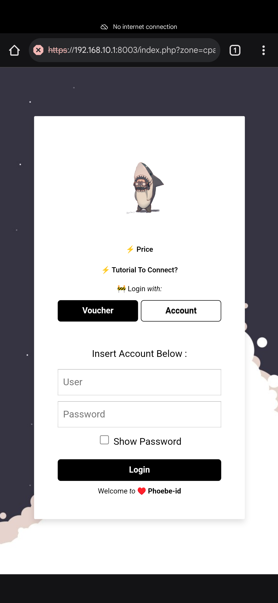

⚡🚧 Langkah Menghubungkan wifi Phoebe-id
-
🔧 1.
Masuk ke wifi "Phoebe-id"
-
🔧 2.
Buka browser: brave, firefox, chrome, atau lainnya.
Ketik: 1.1.1.1
( yang penting http://[0-9].[0-9].[0-9].[0-9] ).

-
🔧 3.
Izinkan sambungan http,
lanjutkan ke situs (continue to site).

-
🔧 4.
Lanjutkan (advanced).

-
🔧 5.
Lanjutkan
proceed to 192.168.10.1 (unsafe).

-
🔧 6.
Berhasil masuk halaman login.

-
🔧 7.
Login dengan voucher

-
🔧 8.
Login dengan user dan password
 -
🔧 9.
Login berhasil.
simbol wifi tidak ada tanda seru !.
login berhasil versi 1.

-
🔧 10.
Login berhasil.
simbol wifi tidak ada tanda seru !.
login berhasil versi 2.